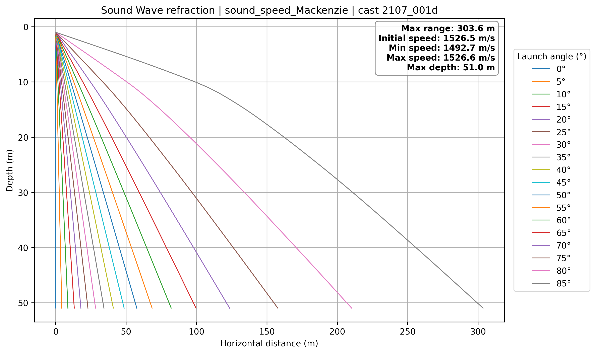

Projects
Python • GIS • Oceanography

Deriving Sound Speed from CTD Profiles
Compare multiple sound-speed equations and generate mapped outputs from open-source CTD data.
Python
CTD
GIS
Oceanography

Computing Ray Paths from Sound Speed Profiles
Visualizing sound wave refraction by using Snell's Law and derived sound speed profiles.
Python
Ray Tracing
Refraction
Hydrography